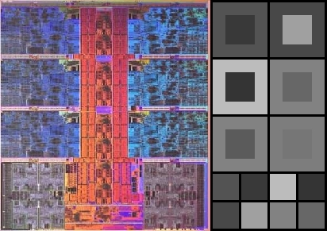

CPU Watcher
(this page is in progress)

I felt very curious about being able to see how computing hardware works in real-time. To visualise the hardware, I mapped the layout of my CPU onto my application, and represented each CPU core as an individual tile.
This side-by-side image shows my particular model of CPU (although I have 4 SMT cores instead of 6) and how my application represents this CPU topology. The blue tiles are the performance cores, that support multi-threading, while the two gray tiles to the bottom - are the two blocks of 4 efficiency cores.
I have also added an experimental feature to throttle each CPU individually, in order to prevent the CPU from staying above a certain temperature. It works surprisingly well, and I will cover it later as I fill up this webpage with more content.
To see how the CPU is working, I am extracting the information about the CPU time usage from the OS, and map this information as the tile color of a corresponding CPU core, or its thread. This is happening very quickly. In my case - it's happening 60 times a second, so I had to make sure that the code is running efficiently.